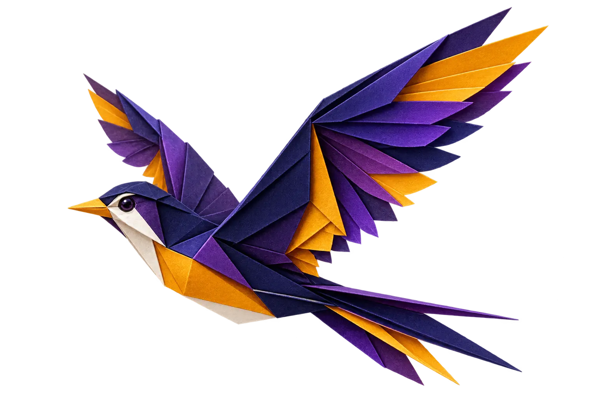

I want to build websites
Learn HTML, CSS and JavaScript by creating pages people can actually visit.
THE ADULT BEGINNER PATH
Start with a problem you recognise. Learn the code needed to solve it. Finish with work you can show, use and keep improving.
Choose what you want to make ↓

START USEFUL.
THEN GO DEEPER.
BEGIN WITH A REASON
The foundation is shared. Your projects lean toward the outcome that matters to you.
Learn HTML, CSS and JavaScript by creating pages people can actually visit.
Use Python to handle calculations, organise information and reduce manual steps.
Move beyond prompting. Inspect outputs, work with data and connect AI to useful workflows.
Build a foundation, discover the work you enjoy and leave with a direction for deeper training.
WHAT YOU LEARN
DIGITAL FOUNDATIONS
Files, browsers, the command line, how the web works, precise instructions and the anatomy of a small program.
WEB BUILDING
HTML, responsive CSS, JavaScript events, forms, accessibility and putting a site online.
PROGRAMMING LOGIC
Python data types, conditions, loops, functions, lists, dictionaries, files, validation and readable errors.
AI WITH JUDGEMENT
Prompting with context, checking hallucinations, protecting private information, reading generated code and testing before trusting.
YOUR PORTFOLIO BUILD
Speak to a user, reduce the idea to a buildable first version, test it, improve it and present the decisions behind it.
NO MAGIC CAREER CLAIMS
Finishing the course will not make you a senior developer. It can make you ready for deeper training, personal projects, supervised junior work and a more informed move into web development, Python, data, AI, design or cybersecurity.